F5 Identity and Access Management Solutions > Class 1: SAML Federation with F5 Source | Edit on
Lab 4: [Optional] SaaS Federation iApp Lab¶
The purpose of this lab is to familiarize the Student with the new SaaS Federation iApp. Students will use the iApp to create a federation relationship with a commonly used SaaS provider. This lab will leverage the work performed previously in Lab 3. Archive files are available for the completed Lab 3.
Objective:
- Gain an understanding of the new SaaS Federation iApp and its features.
- Deploy a working SaaS federation using the iApp to a commonly used SaaS provider
Lab Requirements:
- All lab requirements will be noted in the tasks that follow
Estimated completion time: 25 minutes
TASK 1 – Create a new SaaS SAML Service Provider (SP)¶
Navigate to Access ‑> Federation ‑> SAML Identity Provider ‑> External SP Connectors
Click specifically on the Down Arrow next to the Create button (far right)
Select From Metadata from the drop down menu

In the Create New SAML Service Provider dialogue box, click Browse and select the
SAMLSP-00D36000000jjkp.xmlfile from the Desktop of your jump hostIn the Service Provider Name field, enter:
salesforceClick OK on the dialog box
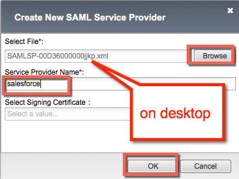
TASK 2 - Deploy the SaaS Federation iApp¶
Navigate to iApps ‑> Application Services -> Applications and click on the Plus (+) Sign as shown
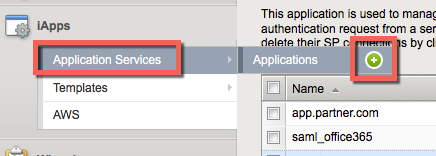
In the resulting New Application Service window, enter saas as the Name
Select
f5.saas_idp.v1.0.rc1from the Template drop down menu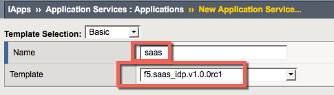
Note
The iApp template has already been downloaded and imported for this lab. You can download the latest iApp templates from https://downloads.f5.com/
Configure the iApp template as follows:
SaaS Applications Application: New federation relationship with salesforce.comSP: salesforceDisplay Name: SalesForceSP Initiated: No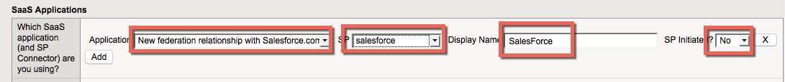
BIG-IP APM Configuration What EntityID do you want to use for your SaaS applications? https://idp.f5demo.com/idp/f5/Should the iApp create a new AAA server or use an existing one? f5demo_ad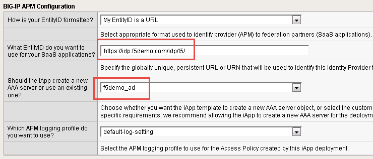
BIG-IP Virtual Server What is the IP address clients will use to access the BIG-IP IdP Service? 10.1.10.120What port do you want to use for the virtual server? 443Which certificate do you want this BIG-IP system to use for client authentication? idp.f5demo.com.crtWhat is the associated private key? idp.f5demo.com.key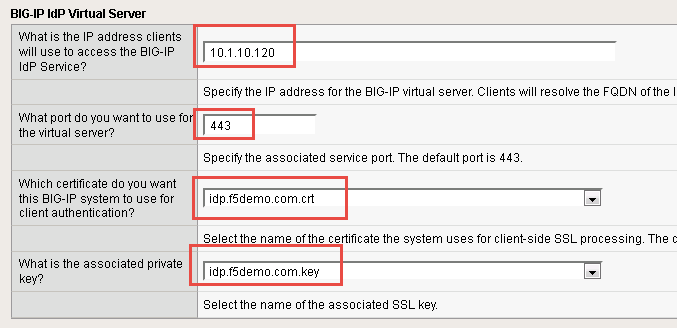
Note
We are deploying the iApp on a different IP so that you can see how everything is built out; however, this IdP will not work, as the
idp.f5demo.comFQDN resolves to another IP. We are going to use the iApp to create the SAML resource that we will assign to our existing access policy from Lab 3.IdP Encryption Certificate and Key Which certificate do you want to use to encrypt your SAML Assertion? SAML.crtWhat is the associated private key? SAML.key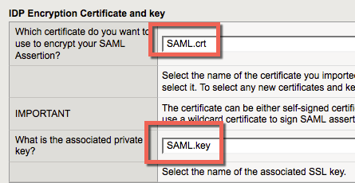
Scroll to the bottom of the configuration template and click Finished
Once deployed, you can review the built out SaaS Federation iApp at iApps ‑> Application Services ‑> Applications ‑> saas
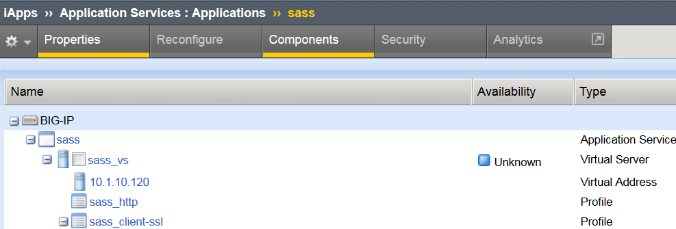
Review the new virtual servers created by the iApp at Local Traffic ‑> Virtual Server ‑> Virtual Server List
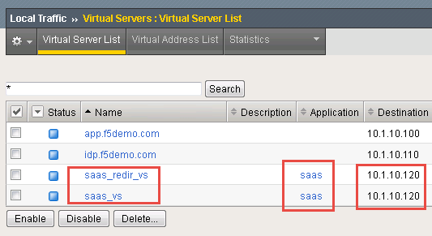
Review the new Access Policy built by the iApp at Access ‑> Profiles/Policies ‑> Access Profiles (Per-Session Policies) and select the Edit link next to the saas Access Policy
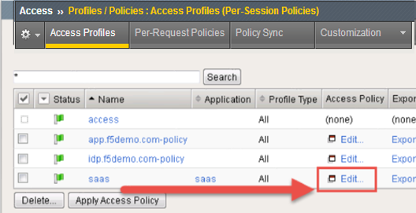
Test the SaaS iApp by clicking on the bookmark in your browser.
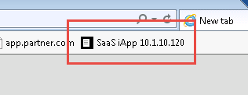
Note
Navigating to the virtual server by IP will produce a certificate warning. This is expected. Click through the warning to see the resulting page.
TASK 3 - Modify the SAML IdP Access Policy¶
The previous task, Task 2, was to provide you an understanding of how the SaaS Federation iApp can automatically build a configuration for you.
In this task we will be modifying the existing Webtop from prior labs to add the SaaS SalesForce application. The purpose of the task is so you can see the F5Demo App and SalesForce in the same Webtop.
Using the same Access Policy from Lab 3, navigate to Access ‑> Profiles/Policies ‑> Access Profiles (Per-Session Policies) and click the Edit link next to the previously created
idp.f5demo.com-policy
In the Visual Policy Editor window for
/Common/idp.f5demo.com‑policy, click the Advanced Resource Assign object.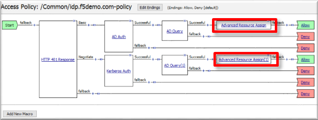
Click the Add/Delete link on the Resource Assignment item
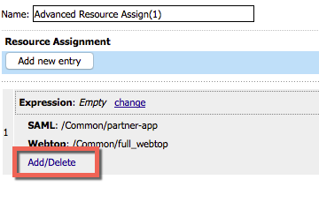
Click the SAML tab, and select the checkbox next to
/Common/saas.app/saas_SalesForce_saml_resource_sso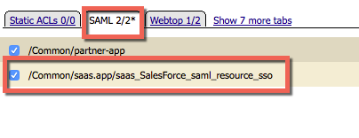
Click the Update button at the bottom of the window to complete the Resource Assignment entry
Click the Save button at the bottom of the Advanced Resource Assign window
Repeat steps 2 - 6 with the Advanced Resource Assign (1) object
In the Visual Policy Editor, click Apply Access Policy (top left), and close the Visual Policy Editor
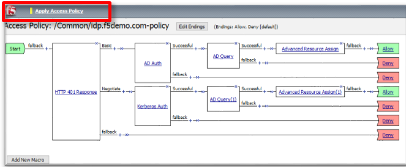
TASK 4 - Test the SaaS Federation Application¶
Using your browser from the jump host, navigate to the SAML IdP previously configured at
https://idp.f5demo.com(or click the provided bookmark)
Were you prompted for credentials? Were you successfully authenticated? Did you see the webtop with the new SaaS SP application?
Click on the SalesForce icon. Were you successfully authenticated (via SAML) to the SP?
Review your Active Sessions (Access ‑> Overview ‑> Active Sessions)
Review your Access Report Logs (Access ‑> Overview ‑> Access Reports)